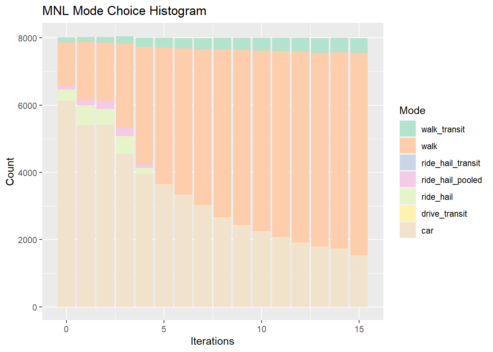
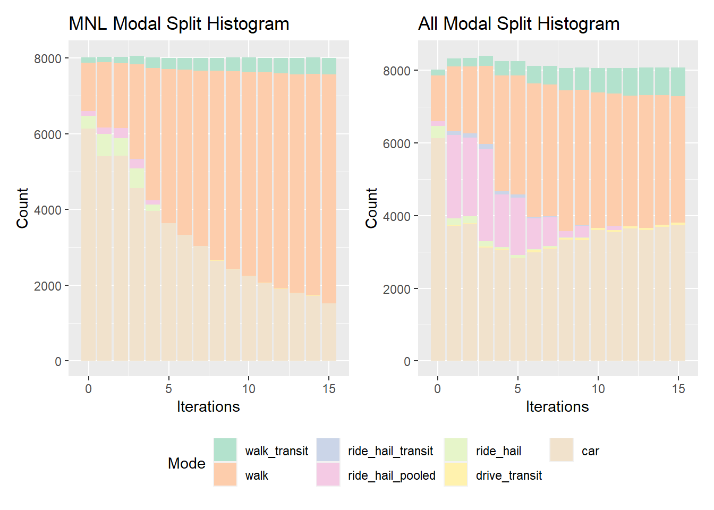

3 Findings
This section might be called “Results” instead of “Applications,” depending
on what it is that you are working on. But you’ll probably say something like
“The initial model estimation results are given in Table ??.”
That table is created with the modelsummary() package and function.
With those results presented, you can go into a discussion of what they mean. first, discuss the actual results that are shown in the table, and then any interesting or unintuitive observations.
3.1 Additional Analysis
Usually, it is good to use your model for something.
- Hypothetical policy analysis
- Statistical validation effort
- Equity or impact analysis
If the analysis is substantial, it might become its own top-level section.
3.1.1 Tour Purpose Model with Path Parameters

3.1.2 Tour Purpose Model with Person Parameters

3.1.3 Tour Purpose Model with Location Parameters

3.1.4 Tour Purpose Model with All Parameters
